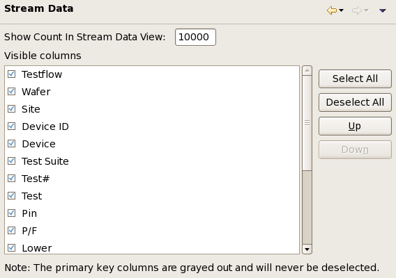

Stream Data preference settings
The Stream Data preference page lets you configure how many data log records from the system data log stream are shown and which columns are displayed in which order in stream data views.

The Show count in Stream Data view field lets you set the maximum number of data log records the view shows. If more records than the specified number arrive, the oldest existing records re removed from the view. This does not affect the data log stored on disk.
The Visible columns list contains all available columns. Columns that are checked in the list are visible in stream data views. Columns displayed in gray cannot be deselected.
The order of the columns in the list is also the order in which the columns appear in the view. It can be changed with the Up and Down buttons.
For a description of the available columns, see Stream data view.
A number of buttons help you in configuring the columns:
- Select All: Check all columns, meaning that all available columns will be displayed in the view.
- Deselect All: Uncheck all columns (except those that cannot be deselected), meaning that none of them will be displayed in the view.
- Up: Moves the selected columns one spot higher in the list. (A column is selected by clicking its name.)
- Down: Moves the selected columns one spot lower in the list.
Functional changes
- Introduced in SmarTest 7.2.0
- SmarTest 7.2.1: Added Show count in Stream Data view field.
- SmarTest 7.2.1: Renamed some columns.